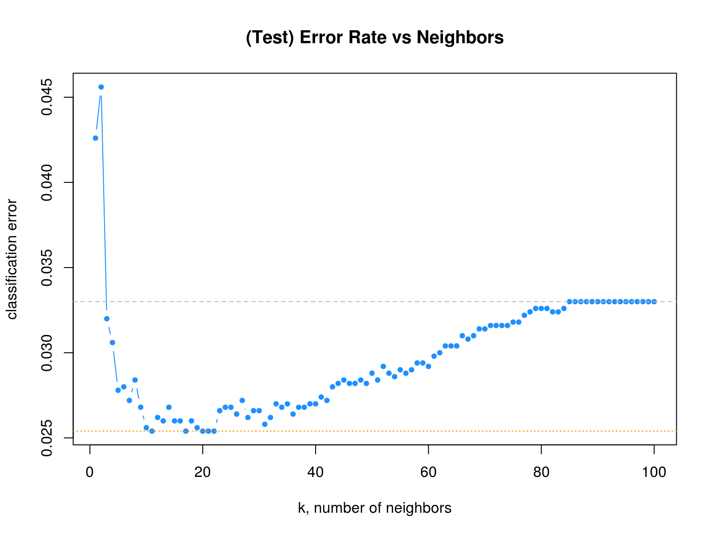

Chapter 12 k-Nearest Neighbors
In this chapter we introduce our first non-parametric classification method, \(k\)-nearest neighbors. So far, all of the methods for classificaiton that we have seen have been parametric. For example, logistic regression had the form
\[ \log\left(\frac{p(x)}{1 - p(x)}\right) = \beta_0 + \beta_1 x_1 + \beta_2 x_2 + \cdots + \beta_p x_p. \]
In this case, the \(\beta_j\) are the parameters of the model, which we learned (estimated) by training (fitting) the model. Those estimates were then used to obtain estimates of the probability \(p(x) = P(Y = 1 \mid X = x)\),
\[ \hat{p}(x) = \frac{e^{\hat{\beta}_0 + \hat{\beta}_1 x_1 + \hat{\beta}_2 x_2 + \cdots + \hat{\beta}_p x_p}}{1 + e^{\hat{\beta}_0 + \hat{\beta}_1 x_1 + \hat{\beta}_2 x_2 + \cdots + \hat{\beta}_p x_p}} \]
As we saw in regression, \(k\)-nearest neighbors has no such model parameters. Instead, it has a tuning parameter, \(k\). This is a parameter which determines how the model is trained, instead of a parameter that is learned through training. Note that tuning parameters are not used exclusively with non-parametric methods. Later we will see examples of tuning parameters for parametric methods.
Often when discussing \(k\)-nearest neighbors for classification, it is framed as a black-box method that directly returns classifications. We will instead frame it as a non-parametric model for the probabilites \(p_g(x) = P(Y = g \mid X = x)\). That is a \(k\)-nearest neighbors model using \(k\) neighbors estimates this probability as
\[ \hat{p}_{kg}(x) = \hat{P}_k(Y = g \mid X = x) = \frac{1}{k} \sum_{i \in \mathcal{N}_k(x, \mathcal{D})} I(y_i = g) \]
Essentially, the probability of each class \(g\) is the proportion of the \(k\) neighbors of \(x\) with that class, \(g\).
Then, to create a classifier, as always, we simply classify to the class with the highest estimated probability.
\[ \hat{C}_k(x) = \underset{g}{\mathrm{argmax}} \ \ \hat{p}_{kg}(x) \]
This is the same as saying that we classify to the class with the most observations in the \(k\) nearest neighbors. If more than one class is tied for the highest estimated probablity, simply assign a class at random to one of the classes tied for highest.
In the binary case this becomes
\[ \hat{C}_k(x) = \begin{cases} 1 & \hat{p}_{k0}(x) > 0.5 \\ 0 & \hat{p}_{k1}(x) < 0.5 \end{cases} \]
Again, if the probability for class 0 and 1 are equal, simply assign at random.

In the above example, when predicting at \(x = (x_1, x_2) = (8, 6)\),
\[ \hat{p}_{5B}(x_1 = 8, x_2 = 6) = \hat{P}_5(Y = \text{Blue} \mid X_1 = 8, X_2 = 6) = \frac{3}{5} \]
\[ \hat{p}_{5O}(x_1 = 8, x_2 = 6) = \hat{P}_5(Y = \text{Orange} \mid X_1 = 8, X_2 = 6) = \frac{2}{5} \]
Thus
\[ \hat{C}_5(x_1 = 8, x_2 = 6) = \text{Blue} \]
12.1 Binary Data Example
library(ISLR)
library(class)We first load some necessary libraries. We’ll begin discussing \(k\)-nearest neighbors for classification by returning to the Default data from the ISLR package. To perform \(k\)-nearest neighbors for classification, we will use the knn() function from the class package.
Unlike many of our previous methods, such as logistic regression, knn() requires that all predictors be numeric, so we coerce student to be a 0 and 1 dummy variable instead of a factor. (We can, and should, leave the response as a factor.) Numeric predictors are required because of the distance calculations taking place.
set.seed(42)
Default$student = as.numeric(Default$student) - 1
default_idx = sample(nrow(Default), 5000)
default_trn = Default[default_idx, ]
default_tst = Default[-default_idx, ]Like we saw with knn.reg form the FNN package for regression, knn() from class does not utilize the formula syntax, rather, requires the predictors be their own data frame or matrix, and the class labels be a separate factor variable. Note that the y data should be a factor vector, not a data frame containing a factor vector.
Note that the FNN package also contains a knn() function for classification. We choose knn() from class as it seems to be much more popular. However, you should be aware of which packages you have loaded and thus which functions you are using. They are very similar, but have some differences.
# training data
X_default_trn = default_trn[, -1]
y_default_trn = default_trn$default
# testing data
X_default_tst = default_tst[, -1]
y_default_tst = default_tst$defaultAgain, there is very little “training” with \(k\)-nearest neighbors. Essentially the only training is to simply remember the inputs. Because of this, we say that \(k\)-nearest neighbors is fast at training time. However, at test time, \(k\)-nearest neighbors is very slow. For each test observation, the method must find the \(k\)-nearest neighbors, which is not computationally cheap. Note that by deafult, knn() uses Euclidean distance to determine neighbors.
head(knn(train = X_default_trn,
test = X_default_tst,
cl = y_default_trn,
k = 3))## [1] No No No No No No
## Levels: No YesBecause of the lack of any need for training, the knn() function immediately returns classifications. With logistic regression, we needed to use glm() to fit the model, then predict() to obtain probabilities we would use to make a classifier. Here, the knn() function directly returns classifications. That is knn() is essentially \(\hat{C}_k(x)\).
Here, knn() takes four arguments:
train, the predictors for the train set.test, the predictors for the test set.knn()will output results (classifications) for these cases.cl, the true class labels for the train set.k, the number of neighbors to consider.
calc_class_err = function(actual, predicted) {
mean(actual != predicted)
}We’ll use our usual calc_class_err() function to asses how well knn() works with this data. We use the test data to evaluate.
calc_class_err(actual = y_default_tst,
predicted = knn(train = X_default_trn,
test = X_default_tst,
cl = y_default_trn,
k = 5))## [1] 0.0316Often with knn() we need to consider the scale of the predictors variables. If one variable is contains much larger numbers because of the units or range of the variable, it will dominate other variables in the distance measurements. But this doesn’t necessarily mean that it should be such an important variable. It is common practice to scale the predictors to have a mean of zero and unit variance. Be sure to apply the scaling to both the train and test data.
calc_class_err(actual = y_default_tst,
predicted = knn(train = scale(X_default_trn),
test = scale(X_default_tst),
cl = y_default_trn,
k = 5))## [1] 0.0278Here we see the scaling slightly improves the classification accuracy. This may not always be the case, and often, it is normal to attempt classification with and without scaling.
How do we choose \(k\)? Try different values and see which works best.
set.seed(42)
k_to_try = 1:100
err_k = rep(x = 0, times = length(k_to_try))
for (i in seq_along(k_to_try)) {
pred = knn(train = scale(X_default_trn),
test = scale(X_default_tst),
cl = y_default_trn,
k = k_to_try[i])
err_k[i] = calc_class_err(y_default_tst, pred)
}The seq_along() function can be very useful for looping over a vector that stores non-consecutive numbers. It often removes the need for an additional counter variable. We actually didn’t need it in the above knn() example, but it is still a good habit. For example maybe we didn’t want to try every value of \(k\), but only odd integers, which woudl prevent ties. Or perhaps we’d only like to check multiples of 5 to further cut down on computation time.
Also, note that we set a seed before running this loops. This is because we are considering even values of \(k\), thus, there are ties which are randomly broken.
Naturally, we plot the \(k\)-nearest neighbor results.
# plot error vs choice of k
plot(err_k, type = "b", col = "dodgerblue", cex = 1, pch = 20,
xlab = "k, number of neighbors", ylab = "classification error",
main = "(Test) Error Rate vs Neighbors")
# add line for min error seen
abline(h = min(err_k), col = "darkorange", lty = 3)
# add line for minority prevalence in test set
abline(h = mean(y_default_tst == "Yes"), col = "grey", lty = 2)
The dotted orange line represents the smallest observed test classification error rate.
min(err_k)## [1] 0.0254We see that five different values of \(k\) are tied for the lowest error rate.
which(err_k == min(err_k))## [1] 11 17 20 21 22Given a choice of these five values of \(k\), we select the largest, as it is the least variable, and has the least chance of overfitting.
max(which(err_k == min(err_k)))## [1] 22Recall that defaulters are the minority class. That is, the majority of observations are non-defaulters.
table(y_default_tst)## y_default_tst
## No Yes
## 4835 165Notice that, as \(k\) increases, eventually the error approaches the test prevalence of the minority class.
mean(y_default_tst == "Yes")## [1] 0.03312.2 Categorical Data
Like LDA and QDA, KNN can be used for both binary and multi-class problems. As an example of a multi-class problems, we return to the iris data.
set.seed(430)
iris_obs = nrow(iris)
iris_idx = sample(iris_obs, size = trunc(0.50 * iris_obs))
iris_trn = iris[iris_idx, ]
iris_tst = iris[-iris_idx, ]All the predictors here are numeric, so we proceed to splitting the data into predictors and classes.
# training data
X_iris_trn = iris_trn[, -5]
y_iris_trn = iris_trn$Species
# testing data
X_iris_tst = iris_tst[, -5]
y_iris_tst = iris_tst$SpeciesLike previous methods, we can obtain predicted probabilities given test predictors. To do so, we add an argument, prob = TRUE
iris_pred = knn(train = scale(X_iris_trn),
test = scale(X_iris_tst),
cl = y_iris_trn,
k = 10,
prob = TRUE)head(iris_pred, n = 50)## [1] setosa setosa setosa setosa setosa setosa
## [7] setosa setosa setosa setosa setosa setosa
## [13] setosa setosa setosa setosa setosa setosa
## [19] setosa setosa setosa setosa versicolor versicolor
## [25] versicolor versicolor versicolor versicolor versicolor versicolor
## [31] versicolor versicolor versicolor versicolor versicolor versicolor
## [37] versicolor versicolor versicolor versicolor versicolor versicolor
## [43] versicolor versicolor versicolor versicolor versicolor versicolor
## [49] virginica versicolor
## Levels: setosa versicolor virginicaUnfortunately, this only returns the predicted probability of the most common class. In the binary case, this would be sufficient to recover all probabilities, however, for multi-class problems, we cannot recover each of the probabilities of interest. This will simply be a minor annoyance for now, which we will fix when we introduce the caret package for model training.
head(attributes(iris_pred)$prob, n = 50)## [1] 1.0000000 1.0000000 1.0000000 1.0000000 1.0000000 1.0000000 1.0000000
## [8] 1.0000000 1.0000000 1.0000000 1.0000000 1.0000000 1.0000000 1.0000000
## [15] 1.0000000 1.0000000 1.0000000 1.0000000 1.0000000 1.0000000 1.0000000
## [22] 1.0000000 0.9000000 1.0000000 0.8000000 1.0000000 0.9000000 0.9000000
## [29] 0.9000000 0.8000000 1.0000000 0.9000000 1.0000000 0.8000000 0.5000000
## [36] 0.8000000 0.9000000 0.8000000 1.0000000 1.0000000 0.7272727 0.9000000
## [43] 0.8000000 0.9000000 1.0000000 1.0000000 0.9000000 0.9000000 0.9000000
## [50] 0.700000012.3 External Links
- YouTube: \(k\)-Nearest Neighbor Classification Algorithm - Video from user “mathematicalmonk” which gives a brief but thorough introduction to the method.
12.4 rmarkdown
The rmarkdown file for this chapter can be found here. The file was created using R version 3.4.2. The following packages (and their dependencies) were loaded when knitting this file:
## [1] "class" "ISLR"